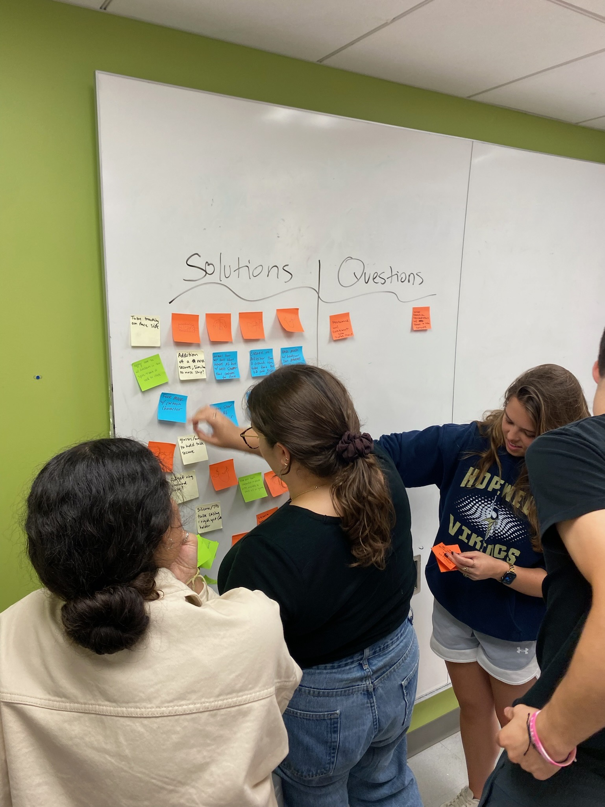
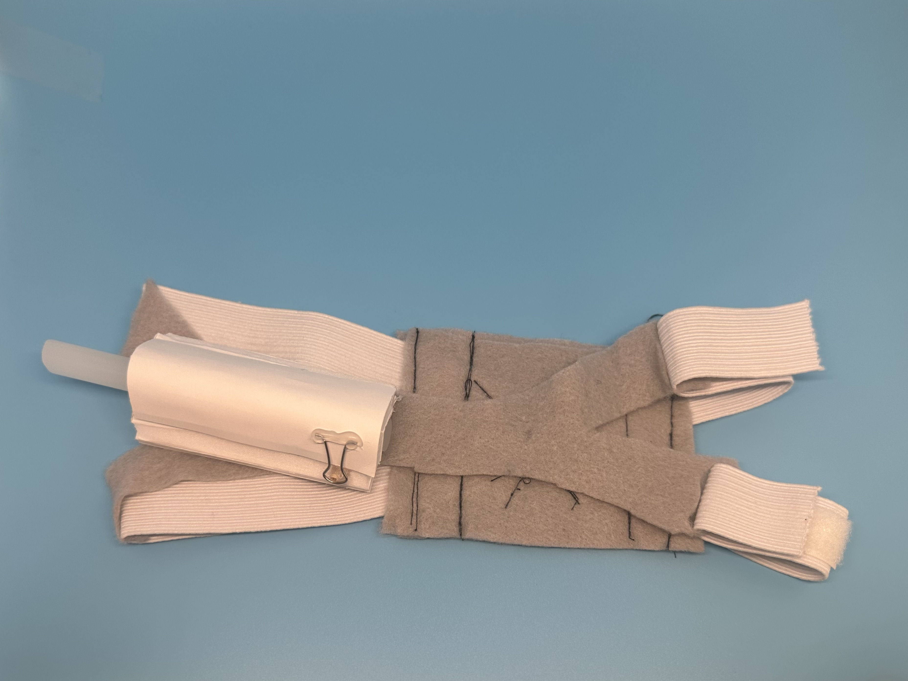
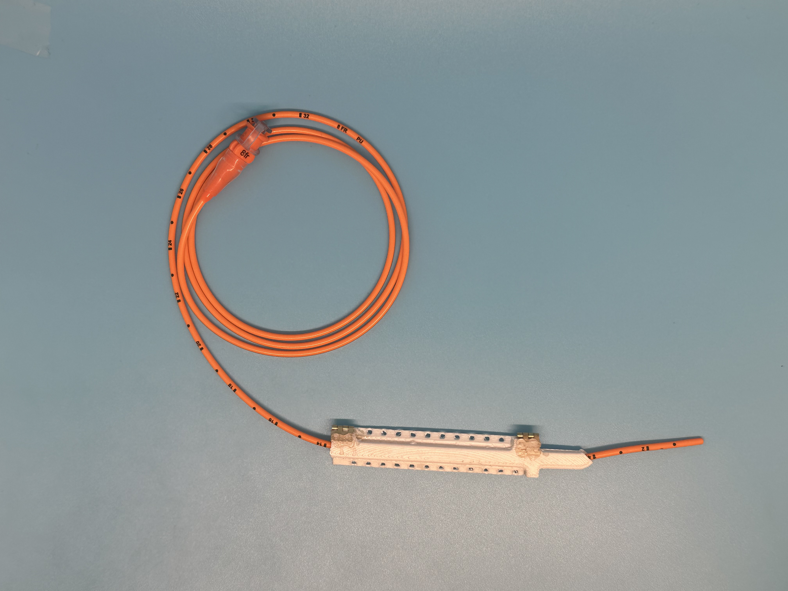

My team was tasked with identifying a clinical unmet need through ethnographical research. We focused on mitigating the untimely removal of nasogastric (NG) tubes in pediatric patients aged 1-6 years old. This journey spanned from initial brainstorms to technical validation and FDA regulatory pre-submissions.

Conceptualization
Team sticky-note session focused on identifying high-impact unmet needs in pediatric care.

Revision 01
Low-fidelity prototype exploring materials. Utilizing foamcore, felt, and elastic to test the initial headgear footprint.

Revision 02: Mechanism
A hinging clip made with PLA using Fused Filament Fabrication. Features a secure clasp and integrated sew-holes for headgear attachment.

Final Iteration
Redesigned four-arm clip for improved securement. I led the manufacturing efforts, fabrication, and design review for this final iteration.